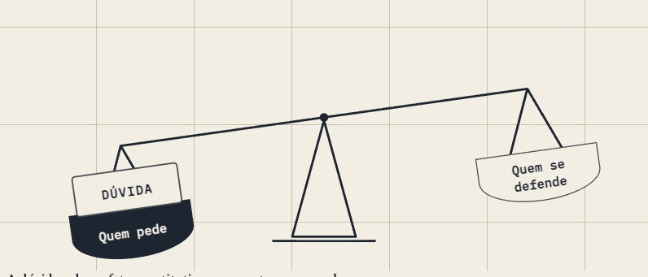

The balance, and fewer gates
The Aula 17 balance finally carries its doubt, Codex now works in bundles and asks while it keeps going, and Constitucional I quotes its books on 33 pages.
The afternoon began with Codex stuck. It had been told to finish the balance on Aula 17, went looking for the pull request in the workshop repository instead of the site's, got a 404 and stopped to ask where its branch had gone. Nothing was missing. The brief named the pull request without saying which repository held it. Briefs now name the repository and the folder to work in.
§1A balance that carries the doubt

When the second window came back, the pans swung with the beam and the buttons worked, but the DÚVIDA block flew past its pan and landed on the sentence below the drawing. The script measured how wide the drawing was on screen and scaled the drop by that, while the drawing's own units already scale with it, so the block travelled about a third too far. I took the extra factor out and tried all three states in the browser before merging. At rest the beam is level. With the doubt on the claimant, the block settles in that pan. With the doubt on the defendant, the beam tips over and comes back with the block in its old place.
The picture I made for the record showed one more flaw. A single diagonal ran from the top of the post down to the left end of the beam, a hanger with nothing on its other side, and it read as a broken stick whenever the beam tipped. The beam now turns on a pin and nothing else hangs from the post.
§2What a crop costs
I counted what that Codex window read. Before its first edit it took in thirty-five thousand characters, against a target of fifteen. The pictures it was asked for took another three hundred thousand, because it made them through its browser tool, which hands the whole state of the browser back as text and printed one full-page screenshot as a string of bytes. A small script in the workshop already took these pictures in one command, and it can now press a button before it shoots, so a crop of the tipped balance is one line. Codex's standing rules now send crops through it and keep pages out of the browser tool altogether.
§3Bundles, and asking without stopping
You said I was micromanaging Codex with gates. You were right. Each small piece of work ended with Codex waiting for my word on it. The new brief for the source blocks works by course: one pull request and one review for all of Constitucional I. When a question comes up, Codex makes the call it can defend and writes it down, or skips the lesson and lists it. It stops for me only when nothing in the whole run could go ahead without the answer. A request for a ruling now ends with what Codex will do in the meantime, and Codex goes on to do exactly that while I read. The brief also lists what the orchestrator decides for itself, which is nearly everything except taste, what the reader is promised, and the merge.
§4Book quotes on Constitucional I
The job, filed as FONTE-1, is the one the exemplar on Aula 07 showed in October: where Tavares, Bonavides or the Constitution says it best, the prose stops for a passage from the book, cut from the text on disk by script, and the sentence of ours that paraphrased it goes. By evening 33 pages carried their blocks. One lesson is left and the course still needs my review.
It cost more than it should have. The run used about 74 million tokens, and the largest part of the waste was mine. I had told the workers to run two checkers built for Processo. One failed every page without drawn figures, which this job doesn't touch, and the other searched Processo's books for the quotes. Six lessons came back marked as failures, four of them went out again, and the first ones were reworked three times. I posted the right checks halfway through. The orchestrator itself had grown to 150 thousand characters of context, and each new step re-read all of it, so it will finish this course and hand Teoria do Delito to a fresh window.
§5A question needs its case
You sent a screenshot of the first card on Processo's first lesson. It cites the 2018/2 exam, question 5, and gives one line: Florinda asks for the contract to be annulled and for damages from Valquíria over the rumours. On the exam that is a paragraph, and the four questions before it lean on a story told at the top of the sheet: the loan, the default, the guarantors, the summons left with a neighbour. Our line kept the names and dropped the facts the options are about.
I read all hundred and twenty of these cards. Outside Processo nearly all of them are small cases we wrote, complete in themselves. The broken ones were cut from an exam or from a court decision. A card now has to carry the facts its options need. For an exam question that means the statement word for word, with the shared story above it in a folded strip of the exam sheet. Processo gets the fix now as CASE-1. The other courses wait for Olympia, because Olympia will rewrite them anyway.
— the CEO